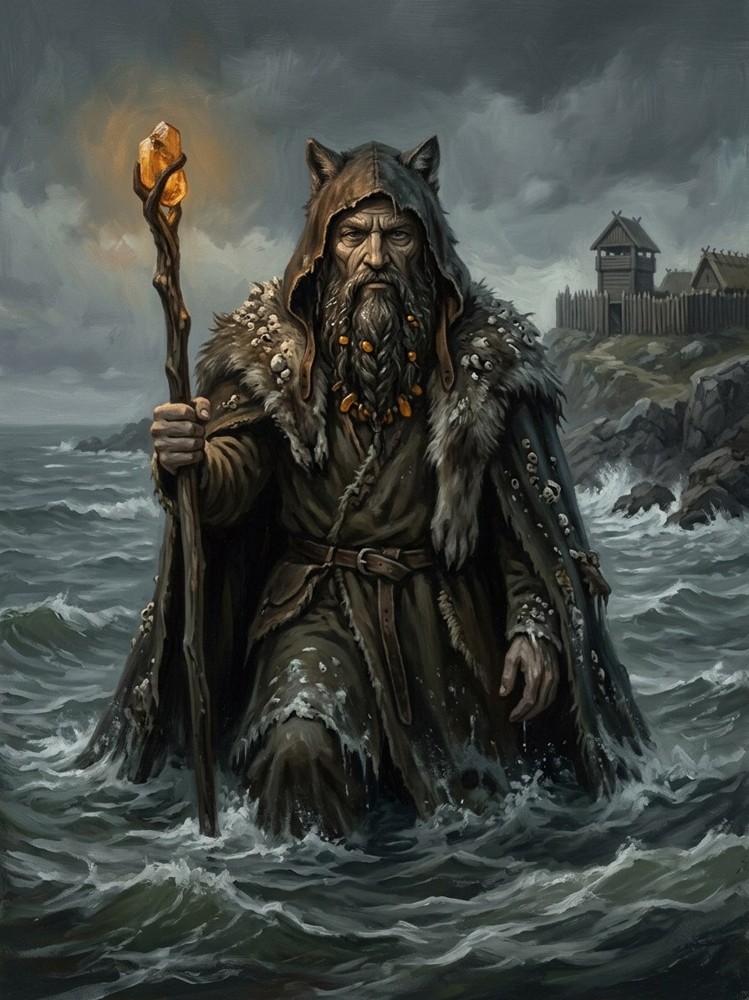

Bangpūtys¶
Tautosakos šaltiniai [Istoriniai duomenys]¶
Bangpūtys is the Lithuanian god of waves, sea and storms. The name is read as banga („wave“) plus pūsti („to blow“). He is late and thinly attested: the early lists give him only through Matthäus Prätorius (1690s), who reports a single rite; he is absent from the medieval chronicles. Later authors made him the father of the four winds (Rytys, Pietys, Šiaurys, Vakaris) and sometimes link him to Vėjopatis.
Bangpūtys

Bangpūtys · god¶
Tipas |
dievybė |
Pastaba |
God of tempestuous sea winds, surging waves, and stormy Baltic waters. |
Sagoje¶
Domain: the sea, storms, waves. Element: Water („Vanduo tau teks“), zenith at full moon, high tide and the spring ice-break. Force-face: none. He is in an old feud with Perkūnas over Jūratė, and Mėnuo sets his tides.
Book I ch. 11: Birutė throws her wedding ring into the waves, „Gabija’s fire in this metal went out, giving way to Bangpūtys’s depth“; the sea returns it three times. Ch. 27 (1384): her full-moon working pays Vytautas’s surety in full. Book VI ch. 10: before the ice-break, the old priestess says „tonight Bangpūtys is strongest, the ice just broke; the cost is lower“. Costs per the magic rules: a minor Water working brings raging thirst; a major one makes the caster take part of the patient’s wound. Limits: it can pull a soul back from the gate but cannot heal a mortal wound, it is doubled away from living water, and the White Silence freezes it.
Aukos ir draudimai¶
Prätorius reports a single sea-rite, and its details are not reliable. In the saga the offering is amber, or a ring given to the water (Birutė’s, Book I ch. 11); the sea may refuse it.
Tarimas¶
bahng-POO-tees (IPA [bɐŋkˈpuːtʲiːs]), stress bang-PŪ-tys. The g devoices before p.
Domain The sea, storms, waves
Layer God (Layer I) · Mėnuo sets his tides
Element Water, Vanduo tau teks · zenith full moon or high tide, strongest at the spring ice-break
Force-face None
Offerings Amber, or a ring given to the water. The sea may refuse it (Birutė's, Book I ch. 11)
Taboos None attested; Prätorius's one sea-rite is unreliable
Signs A ring returned by the waves; foam; the sea's moaning in a storm
Life Spring. Healing, and the pull of a soul back from the gate. It can carry a thirst away or draw poison through hair and blood across distance.
Scrying. The amber priestesses scry in a bowl of water with amber.
A mortal wound. He cannot heal one.
Dry land. The cost doubles away from living water, and the White Silence freezes it.
Thirst. A minor Water working brings raging thirst.
The wound. A major one: the caster takes part of the patient's wound. Moving that cost into another body is forbidden, and the debt finds its owner.
The feud. He is in an old quarrel with Perkūnas over Jūratė.
Sąsajos¶
graph LR
bangputys["Bangpūtys"]
el_water["Vanduo (Water)"]
perkunas["Perkūnas"]
bangputys -->|Element| el_water
perkunas -->|Feud with| bangputys
style bangputys stroke-width:3px